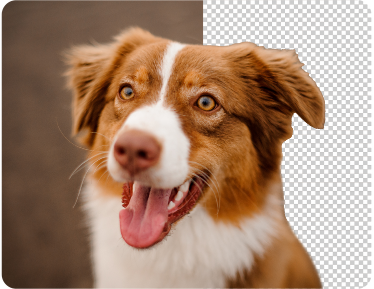

Lab 08 - CSIT 121
This site shows examples of different image formats and uses a responsive navigation bar for your navigation.
Resize the browser window to see how the navigation adapts to different screen sizes. I learned how to
make my website more interactive by adding a responsive navigation bar that works on both desktop and mobile phones.
this lab helped me understand how HTML, CSS, and javascript all work together to make websites easier to use and more
professional looking. It was a little tricky at first for lab 4 since my navigation was not accesible, but once I saw how
the menu adjusted when I resized the screen it made more sense. As well as the links you put up to help us, they helped a lot.
Overall, this lab helped me improve my design and coding skills. Enjoy!
GIF Example

Type: GIF
This is a GIF. I picked it because GIFs are good for simple animations.
I also chose it because it shows how shocked I am because this assignment was not easy. Also cloudy with a chance of meatballs is peak entertainment!
Source:
NGD Africa
JPG Example
Type: JPG
This is a cat picture in JPG format. I picked it because JPG is best for photos
and I love cats. I have one and I’m thinking about getting another one. The cat I have now is a very bad boy so he might be getting replaced.
Source:
Wikimedia Commons
PNG Example

Type: PNG
This is a PNG with transparency. I picked it because PNG works well for logos.
The whole image is not transparent one part is and one part is not.
This dog also shares resemblance with my own dog. Which is a pitbull akita mix.
Source:
Adobe Express